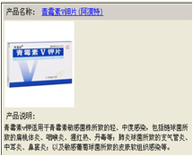
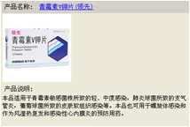
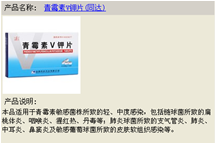

大健医生
西药方案

呼吸道感染抗菌方案
抗心力衰竭药物方案
祛痰药物方案
糖皮质激素治疗方案
解痉平喘药物方案
西药方案
保健方案
凉拌蛰头
蜜汁鸭梨
止咳梨高糖
肺炎饮食禁忌
肺炎饮食保健
保健方案
小儿肺炎饮食禁忌
护理方案
二级护理
半流质饮食
保持呼吸道通顺
儿科护理常规
咳嗽和咳痰
护理方案
检验方案
血清碱性磷酸酶测定
抗病毒药物方案
抗病毒药物方案
抗病毒药物方案
抗病毒药物方案
检验方案
处置方案
吸痰法
抗病毒药物方案
抗病毒药物方案
抗病毒药物方案
抗病毒药物方案
处置方案
中药方剂
抗病毒药物方案
抗病毒药物方案
抗病毒药物方案
抗病毒药物方案
抗病毒药物方案
中药方剂
【概述】
1．治疗上呼吸道感染的概述：
上呼吸道包括鼻腔-鼻窦，咽(鼻咽，口咽，喉咽)，喉和中耳(由于咽鼓管连通鼻咽和中耳，使耳与鼻、咽、喉在解剖、生理和病理方面关系极为密切。所以中耳亦属上呼吸道的范围)。上呼吸道感染是人类最常见的感染性疾病。在病程上有急、慢性之分；病因可由多种病毒、细菌、真菌、梅毒螺旋体等引起。艾滋病的首发表现也常为上呼吸道感染。上呼吸道感染又与邻近器官如口、齿、眼、颅、气管、支气管等部位的感染相互影响，且与风湿、肾炎、心肌炎等全身性疾病有一定关系。
有些特殊部位的上呼吸道感染，如咽后壁脓肿、急性会厌炎、儿童急性喉炎等除感染的一般表现外，还有严重阻塞呼吸道，发生窒息的危险。所以，上呼吸道感染的治疗切不可一概以"伤风(普通感冒)无关紧要"而掉以轻心。为提高上呼吸道感染的治疗效果，笔者根据经验，推荐如下实践要点。

用药成分
推荐用药
概述



呼吸道感染抗菌方案
解释
【原料】
海蛰头150克，水泡海米5克，白菜心100克，香菜茎少许，酸辣汁适量。
【制作】
将蛰头洗净，用沸水烫一下捞出，用冷水洗一遍，切成片，再用冷水浸泡3小时(中间换水洗几遍)。白菜心切丝，香菜茎烫后，切段。将白菜心装盘，把蜇头沥干，盖在白菜上面(形如馒头)，撒上海米、香菜段，浇上酸辣汁即成。
【作用】
清热化痰，生食能清痰火，润肠燥。适宜于肺热痰壅、咳嗽痰多、喘急胀满、大便燥结等患者作为辅助食疗。
【参考文献】
陈吉雄主编《家庭保健药膳制作400法》，华文出版社，1997
食物
解释
凉拌海蜇
解释
【适用对象】
（一）病重期急性症状有好转，但仍应卧床休息者；
（二）慢性病或年老体弱不宜过多活动者；
（三）普通手术后，或特殊复杂手术及大手术后，病情已趋稳定，而身体仍虚弱者
（四）轻型先兆子痫及产妇；
（五）低能、智力缺陷儿童。
李小寒：《基础护理学·第四版》
患者病情较重，生活不能自理。如大手术后病情稳定者、年老体弱、慢性病不宜多活动者以及幼儿等。
【护理要求】
（一）保持卧床休息，患者可在室内活动；
（二）在生活上给予必要协助；
（三）每周洗澡1-2次，可由患者自洗，或协助擦澡；
（四）每1-2小时巡视一次；
（五）协助功能锻炼，开展疾病的保健宣传咨询工作。
李小寒：《基础护理学·第四版》
（一）每1～2h 巡视患者一次，观察病情；
（二）按护理常规护理；
（三）给予必要的生活协助及心理护理，满足患者身心需要。
【参考文献】
1.原有数据库资料
2.李小寒：《基础护理学·第四版》，人民卫生出版社，2006，P31

辅助
解释
二级护理
【概述】
吸痰法是指经口、鼻腔、人工气道将呼吸道的分泌物吸出，以保持呼吸道通畅，预防吸入性肺炎、肺不张、窒息等并发症的一种方法。临床上主要用于年老体弱、危重、昏迷、麻醉未清醒前等各种原因引起的不能有效咳嗽、排痰者。吸痰装置有中心吸引器、电动吸引器两种，它们利用负压吸引原理，连接导管吸出痰液。各大医院均设中心负压装置，吸引器管道连接到各病房床单位，使用时只需接上吸痰导管，开启开关，即可吸取，十分便利。
电动吸引器由马达、偏心轮、气体过滤器、压力表、安全瓶、贮液瓶组成。安全瓶和贮液瓶可贮液1000ml ，瓶塞上有两个玻璃管，并通过橡胶管相互连接。接通电源后马达带动偏心轮，从吸气孔吸出瓶内空气，并由排气孔排出，不断循环转动，使瓶内产生负压，将痰液吸出。
在紧急状态下，可用注射器吸痰及口对口吸痰。前者用50～100ml 注射器连接导管进行抽吸；后者由操作者托起患者下颌，使其头后仰并捏住患者鼻孔，口对口吸出呼吸道分泌物，解除呼吸道梗阻症状。
【目的】
（一）清除呼吸道分泌物，保持呼吸道通畅。
（二）促进呼吸功能，改善肺通气。
（三）预防并发症发生。
【操作前准备】
（一）评估患者并解释
1.评估患者年龄、病情、意识、治疗情况，有无将呼吸道分泌物排出的能力，心理状态及合作程度。
2.向患者解释吸痰的目的、方法、注意事项及配合要点。
（二）患者准备
1.了解吸痰的目的、方法、注意事项及配合要点。
2.体位舒适，情绪稳定。
（三）护士自身准备：衣帽整洁，修剪指甲，洗手，戴口罩。
（四）用物准备
1.治疗盘内备：有盖罐2只（1 只盛无菌生理盐水，1 只盛放已消毒的吸痰管数根）、弯盘、消毒纱布、无菌血管钳或镊子。
2.治疗盘外备：电动吸引器或中心吸引器，试管（内盛有消毒液，置于床栏处），可消毒吸引器上玻璃接管。必要时备压舌板、张口器、舌钳、电插板等。
（五）环境准备：室温适宜、光线充足、环境安静。
【基本操作】
1.备齐用物：(1)备吸引器→接电源→检查吸引器性能；(2)治疗盘放于病人床旁。
2.病人准备：(1)核对、对清醒者解释；(2)病人头转向操作者。
3.插管：湿润导管，试吸→插管(鼻腔、口腔)→咽喉。
4.吸痰顺序：启动马达→吸引。
5.吸痰方法：(1)右手持钳，将管插入(插管时，左手指压紧避免产生负压)，然后左右旋转，向上提出，吸尽痰液；(2)时间：每次约15s；(3)负压：小儿100mmHg、(13.3kPa)；成人150mmHg(20kPa)；(4)必要时，反复吸(隔3-5min)。
6.观察：面色、呼吸道是否通畅。
7.记录：病情及痰量、性质。
8.擦净面部。
9.整理床单位。
10.清理用物：(1)用物消毒→清洗→消毒；(2)定时清洗贮痰瓶(吸出痰液，消毒后倾倒)。
【操作步骤】
（一）核对：携用物至患者床旁，核对患者床号、姓名，确认患者。
（二）调节：接通电源，打开开关，检查吸引器性能调节负压，一般成人40.0～53 .3kPa ( 300～400mmHg )；儿负压童＜40.0kPa。
（三）检查：患者口、鼻腔，取下活动义齿，若口腔吸痰有困难，可由鼻腔吸引；昏迷患者可用压舌板或张口器帮助张口。
（四）体位：患者头部转向一侧，面向操作者
（五）试吸：连接吸痰管，试吸少量生理盐水，检查吸痰管是否通畅，同时润滑导管前端。
（六）吸痰：一手返折吸痰导管末端，另一手用无菌血管钳（镊）持吸痰管前端，插入口咽部（10～15cm），然后放松导管末端，先吸口咽部分泌物，再吸气管内分泌物，插管时不可有负压，以免引起呼吸道黏膜损伤，若气管切开吸痰，注意无菌操作，先吸气管切开处，再吸口（鼻）部，采取左右旋转并向上提管的手法，以利于呼吸道分泌物的充分吸引。
（七）抽吸：吸痰管退出时，用生理盐水抽吸，以免分泌物堵塞吸痰导管。
（八）观察：气道是否通畅；患者的反应，如面色、呼吸、心率、血压等；吸出液的色、质、量，动态评估患者。
（九）安置患者：拭净脸部分泌物，体位舒适，整理床单位。使患者舒适
（十）整理用物：吸痰管重新消毒或按一次性用物处理，吸痰的玻璃接管插入盛有消毒液的试管中浸泡，吸痰用物根据吸痰操作性质每班更换或每日更换l 或2 次。
（十一）记录：洗手后记录。
【注意事项】
（一）吸痰前，检查电动吸引器性能是否良好，连接是否正确。
（二）严格执行无菌操作，每吸痰一次应更换吸痰管。
（三）吸痰动作轻柔，防止呼吸道黏膜损伤。
（四）痰液粘稠时，可配合叩击、蒸气吸入、雾化吸入，提高吸痰效果。
（五）贮液瓶内吸出液应及时倾倒，不得超过2 / 3 。
（六）每次吸痰时间＜15 秒，以免造成缺氧。
【危重病人吸痰注意事项】
(1)严格执行无菌技术操作，每次吸痰导管需要更换；
(2)吸痰动脉要轻柔，从深部向上提拉，左右旋转，一次插入气道吸痰时间不超过15s。
(3)吸痰导管退出后，应放等渗盐水内抽吸，以保持导管通畅。
(4)吸痰过程中随时擦净喷出的分泌物，观察呼吸频率、节律、深浅、音调变化以及呼吸困难有否改善，以判断吸痰效果。
【康复教育】
（一）教会清醒患者吸痰时正确配合的方法，向患者和患者家属讲解呼吸道疾病的预防保健知识。
（二）指导患者呼吸道有分泌物应及时清除，确保气道通畅，改善呼吸，纠正缺氧。
【参考文献】
1.李小寒：《基础护理学·第四版》，人民卫生出版社，2006，P170
2.原有数据库资料
解释
吸痰法
穴位
【参考范围】
续监测法(37℃)：240u/L；比色法：3-13金氏单位。
【临床评价】
碱性磷酸酶为非特异性水解酶类，在碱性条件下，能水解各种磷酸酯键而释放出无机磷，同时又具有磷酸转移酶的作用，即能将释放的无机磷直接转移到受体如糖的分子上，因而在磷酸基的转移中起着十分重要的作用。ALP几乎存在于机体的各种组织中，是膜结合酶，在肠上皮、肾小管、成骨细胞、肝脏、胎盘及白细胞中尤其丰富。ALP的生理作用现还不很清楚，但与肠内脂质转移及骨质钙化有关。
血清ALP测定主要用于肝胆系统及骨骼系统疾病的诊断。血清ALP在胆道梗阻、肝细胞损害、肝细胞和胆管上皮细胞再生或癌变等情况下均可升高。升高原因是ALP漏入血液，或阻碍胆汁排泄的因素诱导肝细胞合成ALP，或蓄积的胆汁酸溶解细胞膜释放出ALP。氯丙嗪、砷剂、甲基睾丸酮及某些抗生素可引起胆汁郁积性肝炎，导致血清ALP增高。肝病患者若血清胆红素逐渐升高，ALP反而下降，系病情恶化之兆。反之表示肝细胞有再生现象。血清ALP在骨病患者中明显升高，其原因主要是由于成骨细胞增殖所致。如变形性骨炎(Paget病)、原发性及继发性甲状旁腺功能亢进症累及骨骼者、胱氨酸贮积病、骨骼愈合、骨软化病、佝偻病、成骨骨癌。血清ALP升高还可见于正常妊娠、新生儿骨质生成和正在发育的儿童，这是正常生理性的升高。
此外，安妥明、硫唑嘌呤、高钙的摄入可降低血清ALP。
解释
血清碱性磷酸酶测定
检验
【参考范围】
续监测法(37℃)：240u/L；比色法：3-13金氏单位。
【临床评价】
碱性磷酸酶为非特异性水解酶类，在碱性条件下，能水解各种磷酸酯键而释放出无机磷，同时又具有磷酸转移酶的作用，即能将释放的无机磷直接转移到受体如糖的分子上，因而在磷酸基的转移中起着十分重要的作用。ALP几乎存在于机体的各种组织中，是膜结合酶，在肠上皮、肾小管、成骨细胞、肝脏、胎盘及白细胞中尤其丰富。ALP的生理作用现还不很清楚，但与肠内脂质转移及骨质钙化有关。
血清ALP测定主要用于肝胆系统及骨骼系统疾病的诊断。血清ALP在胆道梗阻、肝细胞损害、肝细胞和胆管上皮细胞再生或癌变等情况下均可升高。升高原因是ALP漏入血液，或阻碍胆汁排泄的因素诱导肝细胞合成ALP，或蓄积的胆汁酸溶解细胞膜释放出ALP。氯丙嗪、砷剂、甲基睾丸酮及某些抗生素可引起胆汁郁积性肝炎，导致血清ALP增高。肝病患者若血清胆红素逐渐升高，ALP反而下降，系病情恶化之兆。反之表示肝细胞有再生现象。血清ALP在骨病患者中明显升高，其原因主要是由于成骨细胞增殖所致。如变形性骨炎(Paget病)、原发性及继发性甲状旁腺功能亢进症累及骨骼者、胱氨酸贮积病、骨骼愈合、骨软化病、佝偻病、成骨骨癌。血清ALP升高还可见于正常妊娠、新生儿骨质生成和正在发育的儿童，这是正常生理性的升高。
此外，安妥明、硫唑嘌呤、高钙的摄入可降低血清ALP。
解释
血清碱性磷酸酶测定
中药
保存病例

客户病例
小儿急性支气管肺炎
非心源性肺水肿
小儿急性支气管肺炎
非心源性肺水肿
已成功添加到病例
确定
首页

疾病诊断
疾病百科

解释

【传统医学名词术语国际标准】
2007
code: 2.3.132
term: vomiting
chinese：嘔吐
definition/description ：forcible expulsion of the stomach contents through the mouth
【概念】
呕吐，是指胃及部分小肠内容物，通过食管逆流经口腔排出体外的现象。呕吐可把对机体有害的物质排出体外；但持久而剧烈的呕吐，可引起水与电解质紊乱、营养障碍、胃食管贲门撕裂综合征、吸入性肺炎或憩室等，对机体造成不利的影响。
呕吐与恶心二者临床上往往并见，恶心可能是呕吐的早期症状，呕吐多兼有恶心，但恶心者，却未必呕吐。
【发生机制】
呕吐是由延髓中2个解剖学相邻的结构所控制，它们功能不同。一是神经反射中枢'呕吐中枢'，位于延髓外侧网状结构的背部，直接支配呕吐的动作。它接受来自消化道、大脑皮质、内耳前庭、冠状动脉，以及化学感受触发带的传入冲动。二是化学感受触发带，位于延髓第四脑室的底面，接受各种外来化学物质或药物(如阿朴吗啡、洋地黄、硫酸铜、麦角碱等)与内生代谢产物(如感染、酮症酸中毒、尿毒症等)的刺激，然后由此发出神经冲动，传至呕吐中枢，引起呕吐。
呕吐是一系列复杂的反射动作，其过程可分为3个阶段：恶心、干呕、呕吐。恶心时胃张力和蠕动减弱，十二指肠张力增强，可伴有或不伴有十二指肠液反流。干呕时胃上部放松而胃窦部短暂收缩。呕吐时胃窦部持续收缩，胃逆蠕动、胃底充盈、贲门上升并开放，腹肌收缩，膈肌下降，腹压增高，迫使胃内容物反流入食管，通过咽部而排出体外。
【病因】
1．反射性呕吐：有恶心的先兆，胃虽已排空仍干呕不止，可见于下列疾病。
（1）消化系统疾病：
①胃肠疾病：急性胃肠炎、慢性胃肠炎、消化性溃疡活动期、急性胃扩张、胃扭转、幽门梗阻、肠梗阻等；
②肝、胆、胰疾病：如急性肝炎、慢性活动性肝炎、肝癌破裂、肝脓肿破裂、急性胆囊炎、胆石症、胆囊穿孔、胆囊扭转、急性胰腺炎等；
③腹膜及肠系膜疾病：如急性腹膜炎、膈下脓肿、大网膜扭转等。
（2）其他系统疾病：
①口咽刺激：如慢性咽炎、扁桃体炎、人为的诱导、剧咳、吸烟过度等。
②泌尿系统及生殖系统疾病：如泌尿系统结石、肾绞痛、急性肾盂肾炎、肾梗死、肾周围脓肿、肾破裂、盆腔炎、急性输卵管炎、异位妊娠破裂等。
③心血管疾病：如急性心肌梗死、心力衰竭、休克、急性心包炎、夹层主动脉瘤等。
④眼部疾病：如青光眼、屈光不正等。
⑤急性传染病：如细菌性痢疾、流行性感冒、斑疹伤寒、猩红热、疟疾等。
2．中枢性呕吐：呕吐呈喷射状，胃内容物急剧而有力地喷出，呈顽固性，无恶心的先兆。常见于：
（1）中枢神经系统疾病：
①中枢神经感染，如各种疾病引起的脑膜炎、脑炎、中毒性脑炎。
②颅内血管疾病，如脑出血、脑栓塞、脑动脉血栓形成、蛛网膜下腔出血、高血压性脑病、风湿性脑脉管炎、偏头痛等。
③颅脑损伤，如脑震荡、颅内血肿、脑挫裂伤。
④颅内占位性病变，如原发与转移性脑肿瘤。
（2）药物或化学毒物的作用：如洋地黄、各类抗生素、抗癌药物、砷、有机磷等。
（3）其他：妊娠、代谢障碍(如尿毒症)、糖尿病酮中毒、低钾血症、低钠血症等。
3．前庭障碍性呕吐：
如迷路炎、Meniere病、晕动病等，链霉素中毒时所致的呕吐，也属此范围。此类呕吐与头部位罩改变有密切的关系，常伴有眩晕、眼球震颤、恶心、血压下降、面色苍白、出汗、心悸等自主神经失调症状。
4．神经官能性呕吐：
如胃神经官能症、癔病等。呕吐与精神因素关系密切，无恶心，食后立即发作，呕吐常不费力。
【伴随症状和鉴别】
1．呕吐、腹泻：多见于急性胃肠炎、细菌性食物中毒、霍乱、副霍乱及各种原因的急性中毒。
2．呕吐大量隔宿食物、常在晚间发生：提示有幽门梗阻、胃潴留、十二指肠淤滞。
3．呕吐多且有粪臭味，可见于肠梗阻。
4．呕吐、右上腹疼痛、发热、寒战、黄疸：考虑胆囊炎、胆石症、急性胰腺炎。
5．呕吐、眩晕、眼球震颤：见于前庭器官疾病。
6．呕吐、头痛、喷射性呕吐：见于颅内高压、者青光眼。
7．应用某些药物如抗生素、抗癌药物等发生呕吐，可能与药物副作用有关。
8．育龄妇女呕吐、停经、且呕吐在早晨：应注意早孕。
【上吐下泻】
上吐下泻指呕吐和腹泻症状同时发生或交替出现，与单纯性呕吐或腹泻有所不同。上吐下泻在历代文献中称为"霍乱"，意即这种疾病起于仓卒，挥霍撩乱不安。但必须知道，祖国医学所说的"霍乱"，主要是指以上吐下泻为主要症状的胃肠道病证。
"霍乱"之名首见于《内经》。《素问·六元正纪大论》："太阴所至为中满，霍乱，吐下"。又说："土郁之发，故民病心腹胀，肠鸣而为数后，甚则心痛胁瞋，呕吐霍乱"。在《伤寒论》和《金匮要略》中分别载有"呕吐而利，名曰霍乱"的条文。《诸病源候论·霍乱候》具体地描述了"霍乱"病的症状："其乱在于肠胃之间者，因遇饮食而变化则心腹绞痛，其有先心痛者则先吐，先腹痛者则先利，心腹并痛者则吐利俱发，挟风而实者，身发热，头痛体痛而复吐利，虚者但吐利，心腹刺痛而已"。此后历代医家，凡提到霍乱，除描述吐泻症外，常述及心腹绞痛，所以民间又有"绞肠痧"之称。
【小儿呕吐】
呕吐是儿科常见症状之一。古人常以有物声谓之呕，有物无声谓之吐，但小儿呕吐很难截然分开，故一般多称"呕吐"。
引起的呕吐疾病很多，主要为中焦脾胃失调；其它因传染病、梗阻、畸形、寄生虫等引起者，均益仔细分辨。
"婴儿溢乳"与"呕吐"相近，但婴儿溢乳只见哺乳后不久乳汁从口角溢出，而无其它症状，不属病态，随年龄增长会日渐消失。
【朱氏中医参考值】
呕吐：胃征42，气逆征42，半表半里征20，胆征22；(-60～105)
【参考文献】
刘同库主编《临床诊断学》，河南医科大学出版社，2000，P36
小儿支气管肺炎


右键出现解释弹窗
解释
点击出现疾病的概述弹窗
其他交互方式与第一版一致